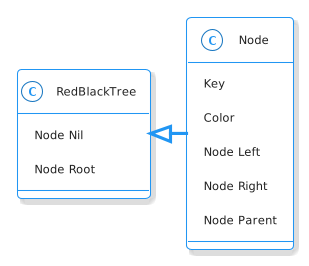

The Red-Black Tree
Table of Contents
This is a post that implements the Node for a Red-Black Tree. It is a continuation of this post.
Beginning
I'm going to implement a Node and Red-Black Tree so that I can explore it further in other posts.
Imports
# python
from pathlib import Path
Set Up
SLUG = "the-red-black-tree"
OUTPUT_PATH = Path(f"files/posts/")/SLUG
if not OUTPUT_PATH.is_dir():
OUTPUT_PATH.mkdir()
Middle
This is the basic structure of our tree.

Imports
# python
from __future__ import annotations
from collections import namedtuple
from enum import Enum
# this project
from bowling.types import Orderable
The Nil Node and Colors
I'm going to set up an Enum for the Colors and a Node instance for the NIL object. I originally made the NIL from a namedtuple, but as I've been adding features to the Node class it's become harder to work with.
Note: The python Enum uses object ID as the way to see if two things are equal, not their values. You can get around it, but since both the colors and the Nil are meant only to be used internally by the tree, not by the end user, I'm going to leave it as is. This means that to do things like check the color outside of the tree module that I'm creating, you have to import the module and refer to the Color or NIL using the module (e.g. tree.Color), otherwise you might end up with some funky problems where things that look equal aren't because they are actually different objects.
Color
class Color(Enum):
"""red or black"""
RED = 1
BLACK = 2
from bowling.data_structures.red_black_tree import tree
print(tree.Color.RED)
print(tree.Color.BLACK)
red = tree.Color.RED
print(red is tree.Color.RED)
print(red == tree.Color.RED)
print(red == 1)
Color.RED Color.BLACK True True False
Note that last case (print(red==1)). It's False because I'm using an Enum. We could switch it to an IntEnum and allow integers but for now I'm sticking to the Enum to see how well it works.
The Nil Node
Note: We have a little bit of a chicken or the egg problem here - I want to check for NILs in the Node Class methods which requires me to define it before defining the Node, so even though the NIL is a special case of the Node, we can't actually use the Node class to create it. It just has to be duck typed enough to be used in the methods.
NIL_KEY = "NIL"
NIL = namedtuple(
"NIL", "key color parent left right is_red is_black",
defaults=[NIL_KEY, Color.BLACK, None, None, None, False, True])()
LEAF = NIL
ROOT_PARENT = NIL
print(tree.NIL)
expect(tree.NIL.color).to(equal(tree.Color.BLACK))
NIL(key='NIL', color=<Color.BLACK: 2>, parent=None, left=None, right=None, is_red=False, is_black=True)
The Node
The Node for a red-black tree is the same as the Binary Search Tree Node except that it has the color attribute. But, since I'm doing integrity checks in the object that also means that the checks have to be updated to take into consideration the Red-Black Tree Properties.
As part of the Insert Node method the new node gets set to RED, so I'm not going to require passing the color in.
class Node:
"""A Node in a Binary Search Tree
Args:
key: item to compare nodes
color: RED or BLACK
parent: parent of this node
left: left child
right: right child
"""
def __init__(self, key: Orderable, color: Color=None,
parent: Node=NIL,
left: Node=NIL, right: Node=NIL) -> None:
self.key = key
self.color = color
self._parent = None
self.parent = parent
self._left = None
self.left = left
self._right = None
self.right = right
return
node = tree.Node(key=1, color=tree.Color.RED)
expect(node.color).to(be(tree.Color.RED))
Properties
Parent
@property
def parent(self) -> Node:
"""The parent of this node"""
if self._parent is None:
self._parent = NIL
return self._parent
@parent.setter
def parent(self, parent_: Node) -> None:
"""Sets the parent and updates the parent
Warning:
this will clobber the parent's child if there's a node where this should
be
Args:
parent: to add to self
Raises:
AssertionError if parent and self have same key
"""
if parent_ is NIL:
self._parent = parent_
return
if self == parent_:
raise AssertionError(f"Self ({self}) cannot equal parent ({parent_})")
# since the left and right assignments update the parent
# we need a hack to get around the setters or you end up
# with an infinite loop - we set left, they set parent, we set left,...
if self < parent_:
parent_._left = self
else:
parent_._right = self
self._parent = parent_
return
Left
@property
def left(self) -> Node:
"""The left child"""
if self._left is None:
self._left = NIL
return self._left
@left.setter
def left(self, new_left: Node) -> None:
"""Sets the left and its parent
Raises:
AssertionError if left isn't less than self
Args:
new_left: a node to be the left child or None
"""
if new_left is NIL:
self._left = new_left
return
assert new_left < self, f"Left ({new_left} not < self {self})"
new_left.parent = self
self._left = new_left
return
Right
@property
def right(self) -> Node:
"""The right child"""
if self._right is None:
self._right = NIL
return self._right
@right.setter
def right(self, new_right: Node) -> None:
"""Sets the right and its parent
Raises:
AssertionError if right isn't greater than self
Args:
new_right: a node to be the right child or None
"""
if new_right is NIL:
self._right = new_right
return
assert new_right > self, f"right ({new_right} not > self ({self})"
new_right.parent = self
self._right = new_right
return
Comparisons
These are convenience methods to make it so that you can compare the node-objects without referring to the key (see the python Data Model documentation). In reading the documentation I thought that you had to implement everything, but after implementing less than and less than or equal to the greater than and greater than or equal to comparisons started to work. I guess if you don't implement them they just take the negative of the less than cases.
Equal
def __eq__(self, other: Node) -> bool:
"""Check if the other node has an equal key
"""
return hasattr(other, "key") and self.key == other.key
Less Than
def __lt__(self, other: Node) -> bool:
"""See if this key is less than the other's
Raises:
AttributeError: the other thing doesn't have a key
Returns:
self < other
"""
if not hasattr(other, "key"):
raise AttributeError(f"'<' not supported between '{type(self)}' "
f"and '({other}): {type(other)}'")
return self.key < other.key
Less Than or Equal
def __le__(self, other: Node) -> bool:
"""See if this key is less than or equal to other's
Raises:
AttributeError: other doesn't have key
Returns:
self <= other
"""
if not hasattr(other, "key"):
raise AttributeError(f"'<' not supported between '{type(self)}' "
"and '{type(other)}'")
return self.key <= other.key
State Properties
Is Left
Is this a left-child node?
@property
def is_left(self) -> bool:
"""True if this node is a left child"""
return self is self.parent.left
from expects import expect, be_true
child = tree.Node(key=2)
parent = tree.Node(key=5)
parent.left = child
expect(child.is_left).to(be_true)
expect(parent.is_left).to_not(be_true)
Is Right
Is the node a right child?
@property
def is_right(self) -> bool:
"""True if this node is a right child"""
return self.parent.right is self
parent = tree.Node(10)
child = tree.Node(15)
parent.right = child
expect(child.is_right).to(be_true)
expect(child.is_left).not_to(be_true)
expect(parent.is_right).not_to(be_true)
Is Red
@property
def is_red(self) -> bool:
"""True if the node is colored red"""
return self.color is Color.RED
node = tree.Node(15, color=tree.Color.RED)
expect(node.is_red).to(be_true)
node.color=tree.Color.BLACK
expect(node.is_red).not_to(be_true)
Is Black
@property
def is_black(self) -> bool:
"""True if the node is colored black"""
return self.color is Color.BLACK
node = tree.Node(15, color=tree.Color.BLACK)
expect(node.is_black).to(be_true)
node.color=tree.Color.RED
expect(node.is_black).not_to(be_true)
Is Root
@property
def is_root(self) -> bool:
"""True if the node is the root"""
return self.parent is NIL
node = tree.Node(15, color=tree.Color.BLACK)
expect(node.is_root).to(be_true)
parent = tree.Node(16)
parent.left = node
expect(node.is_root).not_to(be_true)
expect(parent.is_root).to(be_true)
Check Nodes
This is a convenience method to check if a node and its sub-trees maintain the Binary Search Tree Property. It calls the children too so that the whole tree can be checked by calling this on the root. Now that there's checks when the attributes are set this isn't quite as necessary. The only time you might need it is if the attributes are set directly instead of using the setter.
Note: Although the Binary Search Tree Property allows duplicate keys, once you start doing things with the tree like inserting and deleting nodes it causes problems. Also, it's not likely that the keys are what you would be most interested in when using a tree, it would be the data associated with the node, so what would it mean to have two different items associated with the same key? There are probably uses for this, but to make it simpler I'm going to treat the keys more like dictionary keys and say that it's a mistake to have duplicates.
def check_state(self) -> None:
"""Checks that the Binary Search Tree Property holds
Raises:
AssertionError: Binary Search Tree Property violated or duplicates exist
"""
# red-black property 1: every node is either red or black
assert self.color in (Color.RED, Color.BLACK), f"Invalid Color: {self.color}"
# red-black property 4: if a node is red, both children are black
if self.color is Color.RED:
assert (self.left.color is Color.BLACK and
self.right.color is Color.BLACK),\
(f"Parent: {self.color} Left: {self.left.color} "
f"Right: {self.right.color}. "
"Both Children of a Red parent must be Black")
if self.left is not NIL:
assert self.left < self, f"Left: {self.left} not < Self: {self}"
self.left.check_state()
if self.right is not NIL:
assert self.right > self, f"Right: {self.right} not > Self: {self}"
self.right.check_state()
return
String Output
This is to make it a little easier to print.
def __str__(self) -> str:
"""The key as a string"""
return str(self.key)
Testing
I'll have to break this up later.
Imports
# pypi
from expects import (
be,
be_above,
be_above_or_equal,
be_below,
be_below_or_equal,
be_none,
equal,
expect,
raise_error
)
# software under test
from bowling.data_structures.red_black_tree import tree
One Node
parent = tree.Node(key=10, color=tree.Color.RED)
parent.check_state()
expect(parent.key).to(equal(10))
expect(parent.color).to(be(tree.Color.RED))
expect(parent.left).to(be(tree.NIL))
expect(parent.right).to(be(tree.NIL))
expect(parent.parent).to(be(tree.NIL))
Check the Comparisons
uncle = tree.Node(key=9, color=tree.Color.BLACK)
expect(uncle).to(equal(tree.Node(key=9, color=tree.Color.RED)))
expect(uncle).to(be_below(parent))
expect(uncle).to(be_below_or_equal(parent))
brother = tree.Node(key=20, color=tree.Color.BLACK)
expect(brother).to(be_above(parent))
expect(brother).to(be_above_or_equal(parent))
# I'm still deciding who's responsible for checking if a node exists
# for now I'll copy what happens when None is compared to ints
expect(brother).not_to(equal(uncle.parent))
expect(lambda: brother < uncle.parent).to(raise_error(TypeError))
expect(lambda: brother.parent > uncle).to(raise_error(TypeError))
Check the Two-Way Updates.
-
Set the Parent
In the constructor.
parent = tree.Node(key=10, color=tree.Color.BLACK) left = tree.Node(5, parent=parent, color=tree.Color.RED) expect(left.parent).to(equal(parent)) expect(parent.left).to(equal(left)) right = tree.Node(15, parent=parent, color=tree.Color.BLACK) expect(right.parent).to(equal(parent)) expect(parent.right).to(equal(right)) def bad_parent(): left = tree.Node(key=10, parent=tree.Node(10, color=tree.Color.BLACK), color=tree.Color.BLACK) return expect(bad_parent).to(raise_error(AssertionError))
parent = tree.Node(key=10, color=tree.Color.BLACK) left = tree.Node(5, color=tree.Color.RED) left.parent = parent expect(left.parent).to(equal(parent)) expect(parent.left).to(equal(left)) right = tree.Node(15, color=tree.Color.BLACK) right.parent = parent expect(right.parent).to(equal(parent)) expect(parent.right).to(equal(right)) def bad_parent(): parent = tree.Node(key=10, color=tree.Color.RED) left = tree.Node(key=10, color=tree.Color.BLACK) left.parent = parent return expect(bad_parent).to(raise_error(AssertionError))
-
Set The Left Child
left = tree.Node(5, tree.Color.RED) parent = tree.Node(key=10, left=left, color=tree.Color.BLACK) expect(parent.left).to(equal(left)) expect(left.parent).to(equal(parent)) parent = tree.Node(key=10, color=tree.Color.RED) parent.left = left expect(parent.left).to(equal(left)) expect(left.parent).to(equal(parent))
-
Set The Right Child
right = tree.Node(15, tree.Color.RED) parent = tree.Node(key=10, right=right, color=tree.Color.BLACK) expect(parent.right).to(equal(right)) expect(right.parent).to(equal(parent)) parent = tree.Node(key=10, color=tree.Color.RED) parent.right = right expect(parent.right).to(equal(right)) expect(right.parent).to(equal(parent))
The Check Node Method
uncle = tree.Node(key=9, color=tree.Color.RED)
parent = tree.Node(key=10, color=tree.Color.BLACK)
parent.check_state()
# parent is root
expect(parent.check_state).not_to(raise_error)
# parent is right child
parent.parent = uncle
expect(parent.check_state).not_to(raise_error)
# parent is left child
parent.parent = brother
expect(parent.check_state).not_to(raise_error)
def bad_check():
parent.check_state()
return
# left node is greater than the parent
lefty = tree.Node(15, color=tree.Color.RED)
def bad():
parent.left = lefty
expect(bad).to(raise_error(AssertionError))
parent._left = lefty
expect(bad_check).to(raise_error(AssertionError))
# left node is less than the parent
parent.left = tree.NIL
parent.right = lefty
expect(parent.check_state).not_to(raise_error(AssertionError))
# right node is less than the parent
righty = tree.Node(key=2, color=tree.Color.BLACK)
def bad():
parent.right = righty
return
expect(bad).to(raise_error(AssertionError))
parent._right = righty
expect(bad_check).to(raise_error(AssertionError))
# right and left are okay
parent.left = righty
parent.right = lefty
expect(parent.check_state).not_to(raise_error)
parent = tree.Node(key=10, color=tree.Color.BLACK)
parent.left = tree.Node(key=2, color=tree.Color.RED)
# left children of parent's left child have to be less than parent
def bad():
parent.left.left = tree.Node(key=100, color=tree.Color.BLACK)
expect(bad).to(raise_error(AssertionError))
parent.left.left = tree.Node(key=0, color=tree.Color.BLACK)
expect(parent.check_state).not_to(raise_error)
# right is greater than parent
lefty = tree.Node(15, color=tree.Color.RED)
def bad():
lefty.right = tree.Node(key=0, color=tree.Color.BLACK)
expect(bad).to(raise_error(AssertionError))
# disallow duplicates
parent = tree.Node(10, color=tree.Color.RED)
def bad():
parent.left = tree.Node(10, color=tree.Color.BLACK)
expect(bad).to(raise_error(AssertionError))
parent.key = 11
expect(parent.check_state).not_to(raise_error(AssertionError))
def bad():
parent.right = tree.Node(11, color=tree.Color.BLACK)
expect(bad).to(raise_error(AssertionError))
parent.right = tree.Node(12, color=tree.Color.BLACK)
expect(parent.check_state).not_to(raise_error(AssertionError))
expect(str(parent)).to(equal(str(parent.key)))
Check the Red-Black Properties
# colors have to use the Color Enum
node = tree.Node(5, color=3)
expect(node.check_state).to(raise_error(AssertionError))
node = tree.Node(5, color=tree.Color.BLACK)
expect(node.check_state).to_not(raise_error(AssertionError))
# if a node is red both children must be black
left = tree.Node(5, color=tree.Color.RED)
right = tree.Node(20, color=tree.Color.BLACK)
node = tree.Node(10, color=tree.Color.RED, left=left, right=right)
expect(node.check_state).to(raise_error(AssertionError))
left.color = tree.Color.BLACK
expect(node.check_state).to_not(raise_error(AssertionError))
The Red-Black Tree
class RedBlackTree:
"""The Holder of the Red-Black Tree
Args:
root: the root node of the tree
"""
def __init__(self, root: Node=NIL):
self.root = root
return